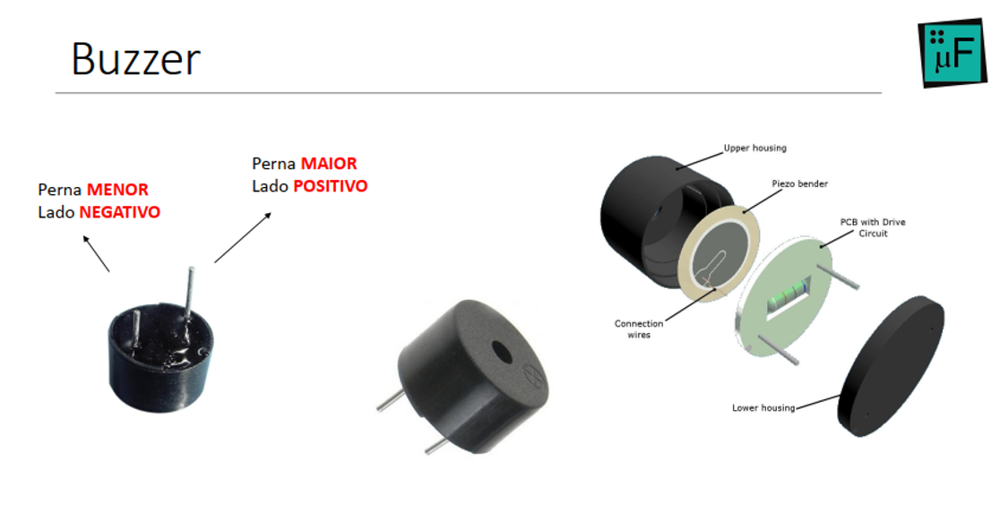
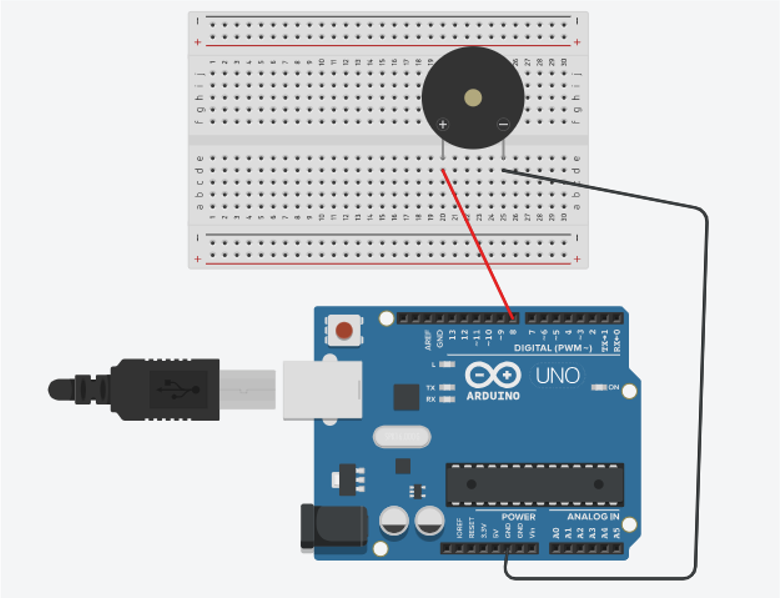

Funcionamento do Buzzer
O buzzer é um componente eletrônico amplamente utilizado em projetos com microcontroladores, como o Arduino, sendo responsável pela emissão de sons. Seu funcionamento baseia-se na conversão de sinais elétricos em vibrações mecânicas, que produzem ondas sonoras audíveis ao ouvido humano. Esse dispositivo é bastante empregado em sistemas de alerta, sinalização e também em aplicações educacionais, como a produção de sons e músicas.


Configuração no Arduino
No contexto da programação com Arduino, o buzzer é controlado por meio de um pino digital previamente definido no código. Inicialmente, declara-se uma variável que associa o buzzer a um determinado pino da placa. Em seguida, na função setup(), esse pino é configurado como saída (OUTPUT), permitindo que o microcontrolador envie sinais elétricos ao dispositivo.

Geração de Som
A geração de som ocorre na função loop(), que é executada continuamente. Para isso, utiliza-se a função tone(), responsável por produzir um sinal elétrico em determinada frequência, medida em Hertz (Hz). Essa frequência define a altura do som emitido, ou seja, se ele será mais grave ou mais agudo.
Além disso, é possível controlar a duração do som utilizando intervalos de tempo definidos em milissegundos, geralmente com o uso da função delay().
Controle do Som
Para interromper a emissão sonora, utiliza-se a função noTone(), que desativa o sinal enviado ao buzzer. Dessa forma, é possível alternar entre momentos de som e silêncio, criando sequências sonoras organizadas.
Aplicação Musical
Um aspecto importante do uso do buzzer é sua aplicação na reprodução de notas musicais. Cada nota corresponde a uma frequência específica, o que permite combinar diferentes valores para formar melodias simples.
As notas musicais são representadas por letras (Dó, Ré, Mi, Fá, Sol, Lá, Si), facilitando a construção de sequências musicais no código. Ao ajustar as frequências e os tempos de execução, é possível compor músicas utilizando apenas o buzzer e o Arduino.
O Código
Abaixo está um exemplo simples de código para acionar o buzzer no Arduino:
// Define o pino do buzzer
int buzzer = 8;
void setup() {
pinMode(buzzer, OUTPUT); // Configura o pino como saída
}
void loop() {
tone(buzzer, 1000); // Emite som de 1000 Hz
delay(1000); // Aguarda 1 segundo
noTone(buzzer); // Para o som
delay(1000); // Aguarda 1 segundo
}
Importância no Aprendizado
Assim, o buzzer não apenas desempenha funções práticas em sistemas eletrônicos, mas também constitui uma ferramenta didática relevante para o ensino de conceitos fundamentais de programação, eletrônica e lógica, permitindo a integração entre teoria e prática por meio de atividades interativas.